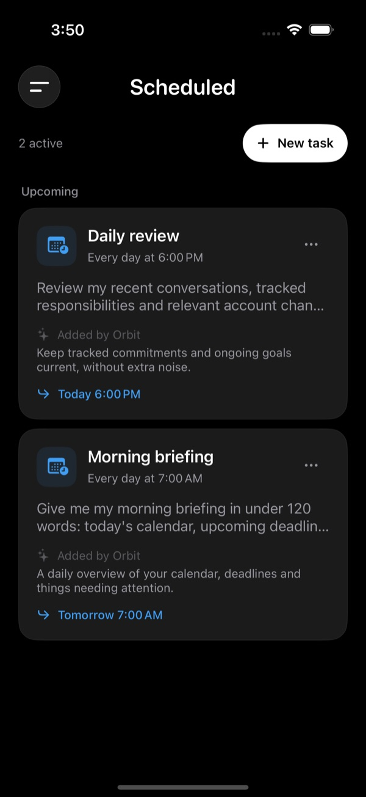
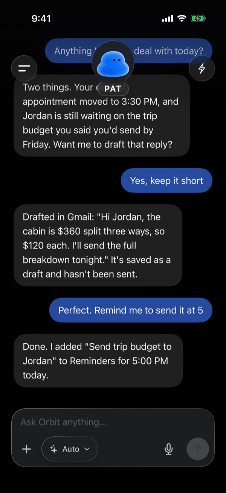
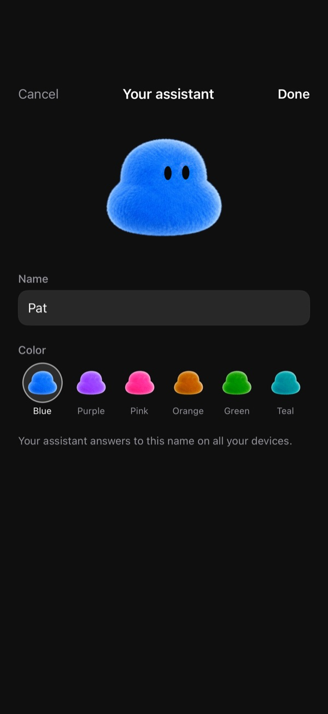

Orbit
A self-hosted AI assistant that works with email, calendar, and reminders, and asks before it acts. Each user runs their own Cloudflare Workers and D1 backend; sends and edits wait for approval.
View on GitHub